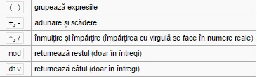
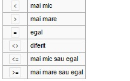
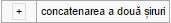

Pascal

Pascal este unul dintre limbajele de programare de referință în știința calculatoarelor. Pascal a fost dezvoltat de elvețianul Niklaus Wirth în 1970 pentru a pune în practică programarea structurată, aceasta fiind mai ușor de compilat. Unul din marile sale avantaje este asemănarea cu limbajul natural limba engleză, ceea ce îl face limbajul ideal pentru cei care sunt la primul contact cu programarea. Pascal este bazat pe limbajul Algol și a fost denumit astfel în onoarea matematicianului Blaise Pascal, creditat pentru construirea primelor mașini de calcul numeric. Wirth a mai dezvoltat limbajele Modula-2 și Oberon, similare cu Pascal.
Cele mai populare implementări a acestui limbaj au fost Turbo Pascal și Borland Pascal, ambele ale firmei Borland cu versiuni pentru Macintosh și DOS, care i-au adăugat limbajului obiecte și au fost continuate cu versiuni destinate programării vizuale pentru Microsoft Windows (utilizate de mediul de dezvoltare Delphi) și pentru Linux (Kylix).
În prezent există și alte implementări mai mult sau mai puțin populare, dar gratuite, printre care se remarcă Free Pascal și GNU Pascal.
Deși în prezent este relativ rar folosit în industria software, el este încă util elevilor și studenților care doresc să se inițieze în programare. Spre deosebire de BASIC, care a stat în trecut la baza învățării programării, Pascal este un limbaj structurat. De aceea, el formează un anumit tip de gândire, similar limbajelor moderne, precum C++, dar nu deține complexitatea și abstractizarea acestuia din urmă, fiind mai ușor de înțeles datorită sintaxei simple și apropiate de pseudocod.
Tipuri de date de bază
- Integer (numere întregi)
- Real (numere reale)
- Char (caractere)
- String (șiruri de caractere)
- Boolean (valori logice)
- Text (fișiere text)
- File (fișiere binare)
- Array (vectori)
Operatori (clasificare după tipul de date)
- Pentru datele numerice (integer, real, byte, word) 
- Operatori relaționali 
- Pentru datele de tip șir de caractere (string) 
Vezi și ...
Comparație
Limbajul de programare C++ a fost inițial derivat din C. Totuși, nu absolut orice program scris în C este valid C++. Deoarece C și C++ au evoluat independent, au apărut, din nefericire, o serie de incompatibilități între cele două limbaje de programare.

Cea mai amplă revizie a limbajui C, C99, a creat un număr suplimentar de conflicte. Diferențele fac să fie greu de scris programe și biblioteci care să fie compilate și să ruleze corect în calitate de cod C sau C++, și produce confuzii celor care programează în ambele limbaje. Diferențele fac ca fiecare din cele două limbaje de programare să împrumute din caracteristicile celuilalt limbaj de programare.
Limbaje de programare de viitor
Domeniul IT este unul foarte dinamic, in continua dezvoltare, care ofera numeroase oportunitati de angajare. Pentru a veni in ajutorul tinerilor care isi doresc sa lucreze in domeniul IT, dar si a specialistilor care sunt interesati de evolutia pietei, HiPo.ro a realizat o analiza a tendintelor privind utilizarea diferitelor limbaje de programare.

In prezent, cele mai populare 10 limbaje de programare sunt: Java, C, C++, PHP, C#, Objectiv C, Visual Basic, Python, Perl si Java Script. In graficul de mai jos poti vedea detalii legate de ponderea fiecarui limbaj de programare in ceea ce priveste popularitatea sa in randul specialistilor din domeniul IT din intreaga lume, a locurilor de munca disponibile, precum si a ofertelor de cursuri de specializare.